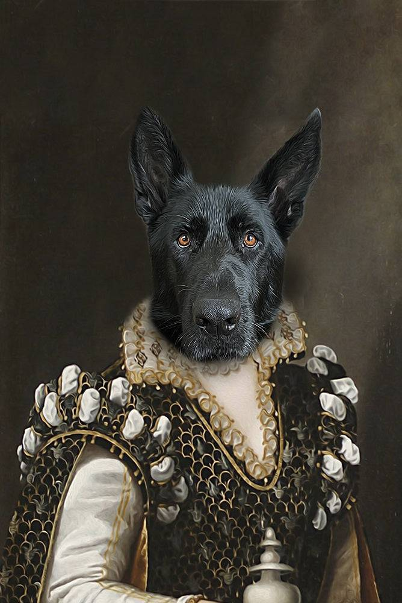

Fine quality fresh ingredients

Best quality line caught fish from sustainable local fisheries.
Chef Banzai
Trained under Japanese sushi masters, since the age of 5 and for 72 years, Chef Banzai Sarumaku knows well how to fillet a fish by now. True to his family's Samurai heritage his filleting method is by sword, often accompanied by his notorious shreiking of samurai battle cries.
Reviews
Millicent Houghton-Bogtrotter ('Boggie')- "A dining experience quite unlike any other, marvellous."
 Cecil Chadwick-Smotherington ('Chadders') - "Frightfully foreign stuff, one ought be accompanied by Primus."
 Humphrey Headingly-Snodsbottom ('Snodders') -
"Rather agreeable, though bracing, oriental grub. Import to Whites perhaps."
Humphrey Headingly-Snodsbottom ('Snodders') -
"Rather agreeable, though bracing, oriental grub. Import to Whites perhaps."